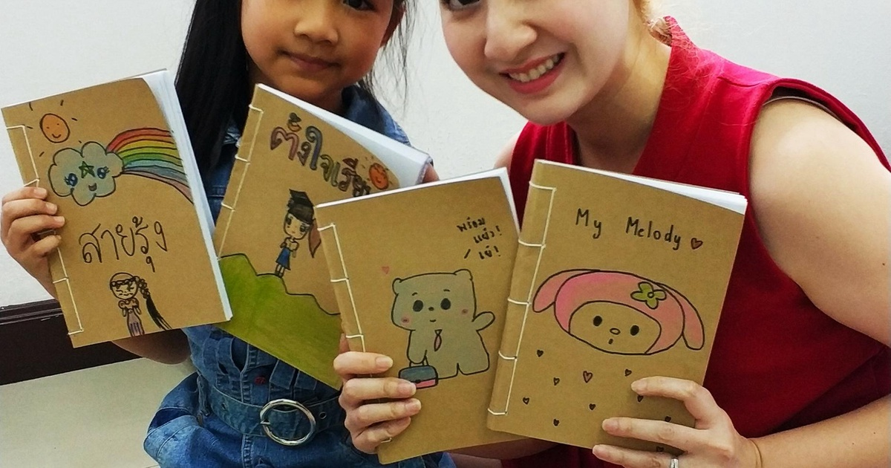
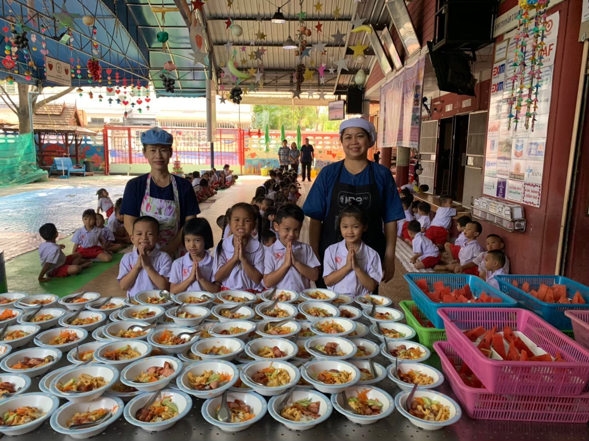
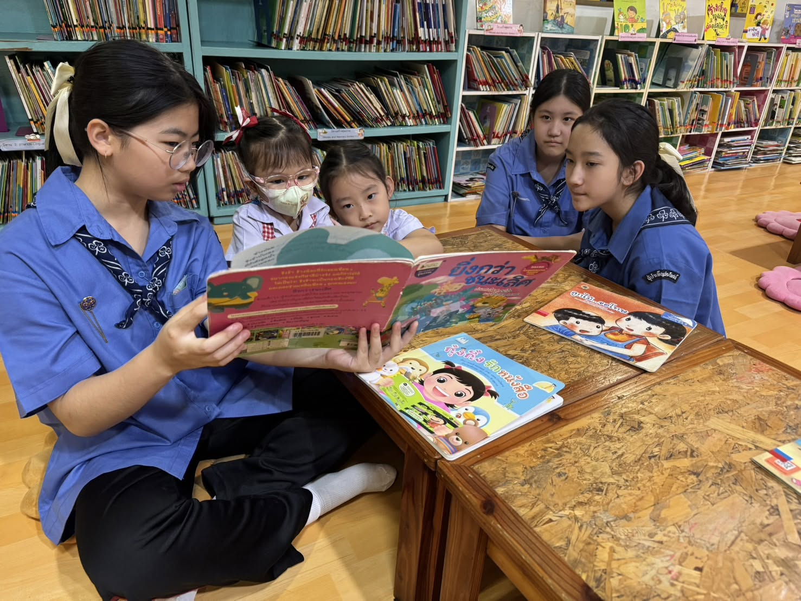

ร่วมสร้างโลกและสังคมให้น่าอยู่
พร้อมส่งต่อรอยยิ้มไปกับเรา
แพลตฟอร์มรวมกิจกรรมจิตอาสา ทั้งการฟื้นฟูธรรมชาติ อนุรักษ์ทะเล สอนหนังสือ และลงพื้นที่
เริ่มต้นง่าย สมัครง่าย ปลอดภัย สมัครเลย
โครงการจิตอาสา เปิดรับสมัครตอนนี้
เลือกโครงการที่คุณสนใจและร่วมเดินทางสร้างสิ่งดีๆ ร่วมกับเพื่อนใหม่ที่มีหัวใจรักสิ่งแวดล้อม

25 ต.ค. พ.ศ.2569จิตอาสาทำสมุดทำมือจากกระดาษรีไซเคิลให้น้อง ๆ ด้อยโอกาส
ร่วมทำสมุดจากกระดาษเหลือใช้ ที่นำกลับมารีไซเคิลให้เป็นสมุดที่พร้อมใช้งานอีกครั้ง เพื่อนำไปบริจาคต่อให้กับน้อง ๆ ที่ขาดแคลนทุนทรัพย์ หรือน้อง ๆ ที่อยู่ตามถิ่นทุรกันดารทั่วประเทศ

28 ต.ค. พ.ศ.2569โครงการมื้ออาหารกลางวัน เพื่อเด็ก
จิตอาสาไปร่วมกันช่วยทำมื้ออาหารกลางวันให้แก่เด็ก ๆ เพื่อช่วยในเรื่องของโภชนาการของน้อง ๆ ในวัยเรียนและยังเป็นการช่วยลดค่าใช้จ่ายในครัวเรือนให้แก่ครอบครัวของเด็ก ๆ

21 พ.ย. พ.ศ.2569จิตอาสาพี่สอนน้อง อ่านนิทานสร้างจินตนาการ
ร่วมจัดกิจกรรมอ่านนิทาน สอนการบ้าน และทำกิจกรรมศิลปะร่วมกับเด็ก ๆ เพื่อส่งเสริมทักษะการอ่าน ความคิดสร้างสรรค์ และพัฒนาการทางสังคม
4 สเต็ปง่ายๆ ในการร่วมกิจกรรม
เริ่มต้นเป็นอาสาสมัครได้ในเวลาไม่ถึง 2 นาที ไม่ยุ่งยาก และไม่มีค่าธรรมเนียมแอบแฝง
เลือกกิจกรรม
เลือกโครงการและวันที่ที่คุณสะดวก จากหมวดหมู่สิ่งแวดล้อม การศึกษา หรือชุมชน
กรอกข้อมูลสมัคร
กดปุ่มสมัคร กรอกข้อมูลชื่อ เบอร์โทร และทักษะของคุณผ่านระบบออนไลน์
รับการยืนยัน
รับอีเมลยืนยันสิทธิ์ พร้อมกำหนดการเดินทาง และกลุ่มไลน์ประสานงานโครงการ
ลุยงาน & รับใบเซอร์
ร่วมลงมือทำกิจกรรมด้วยความสุข และรับเกียรติบัตรรับรองชั่วโมงจิตอาสาหลังจบงาน
พร้อมที่จะเป็นพลังเล็กๆ ที่สร้างการเปลี่ยนแปลงแล้วหรือยัง?
ร่วมลงมือฟื้นฟูธรรมชาติและเติมเต็มรอยยิ้มให้ชุมชนกับ Ground Team ได้เลยวันนี้ ไม่มีค่าใช้จ่ายในการสมัคร